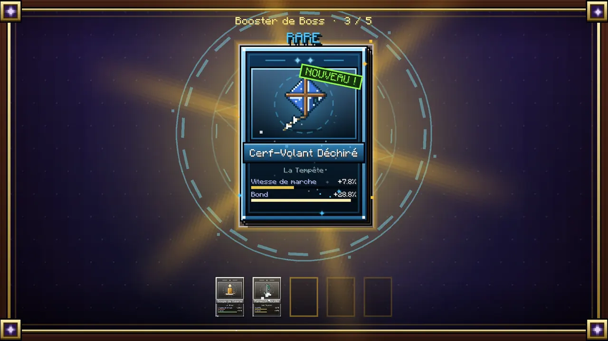
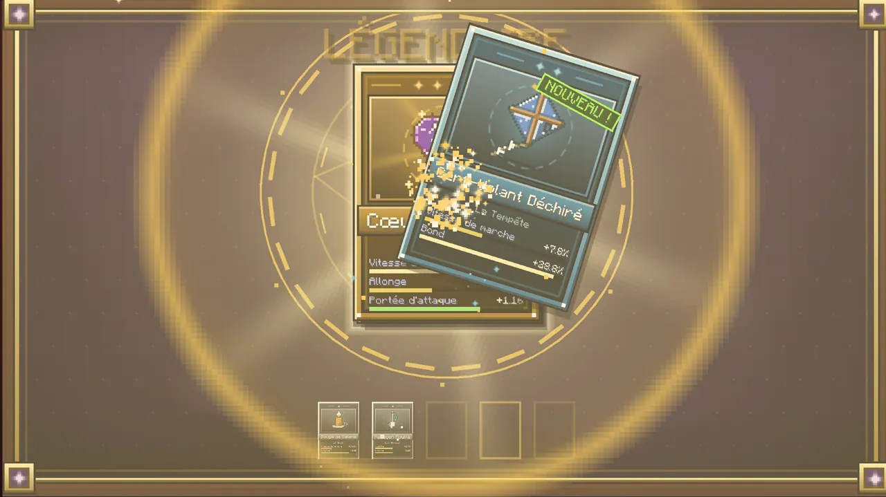
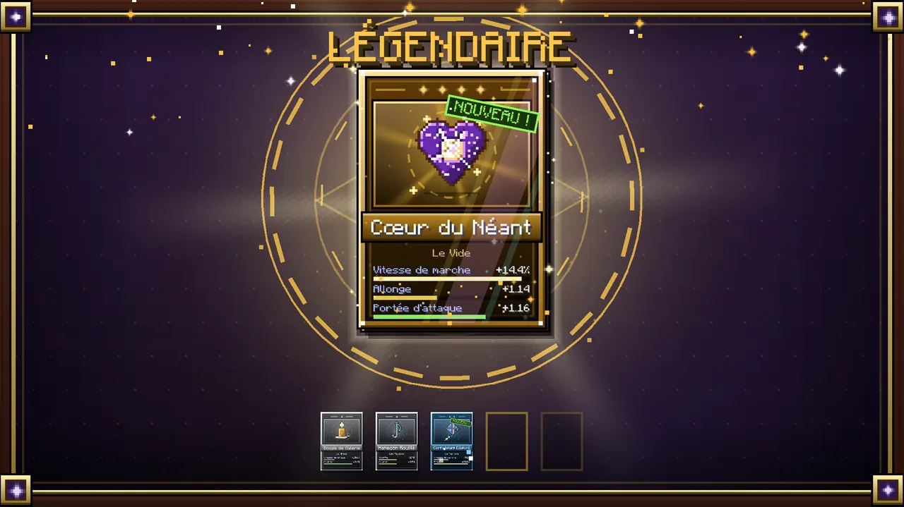
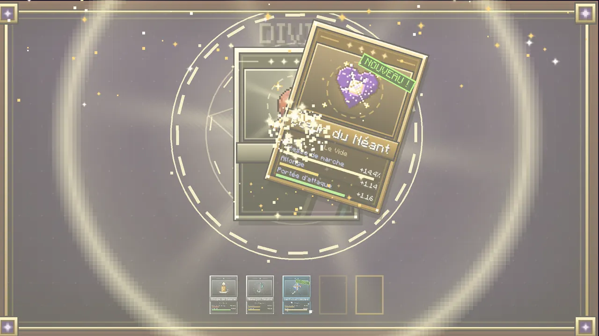
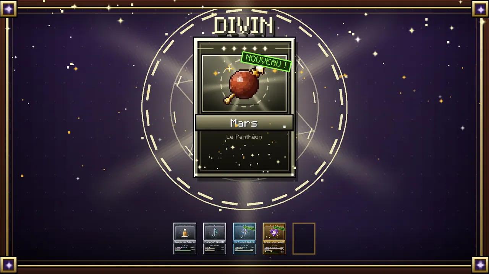
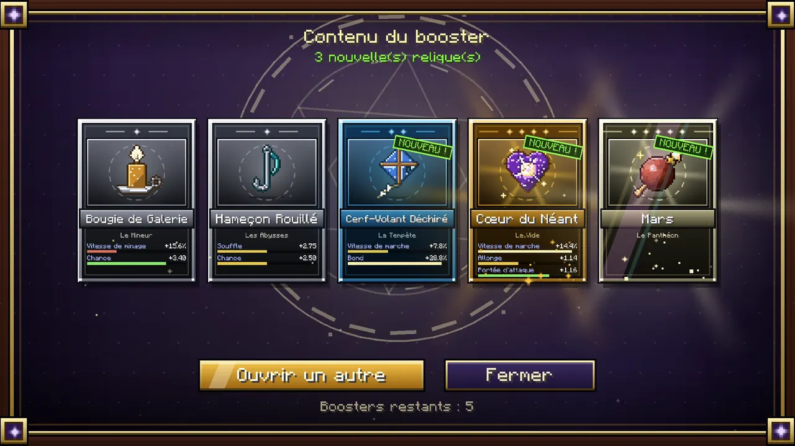
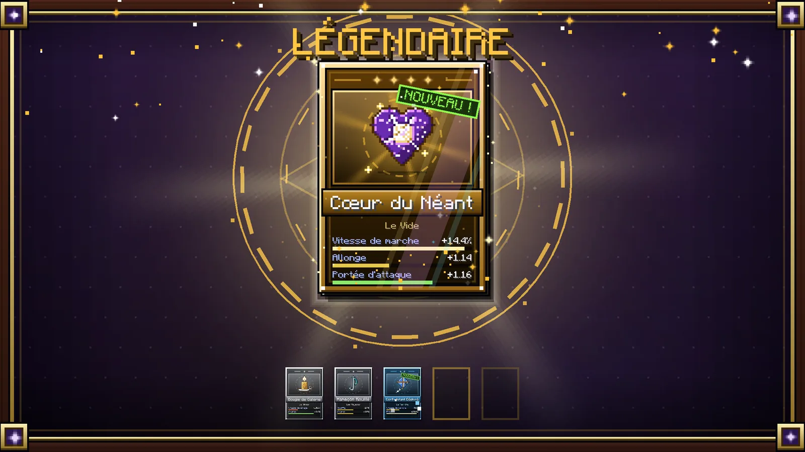
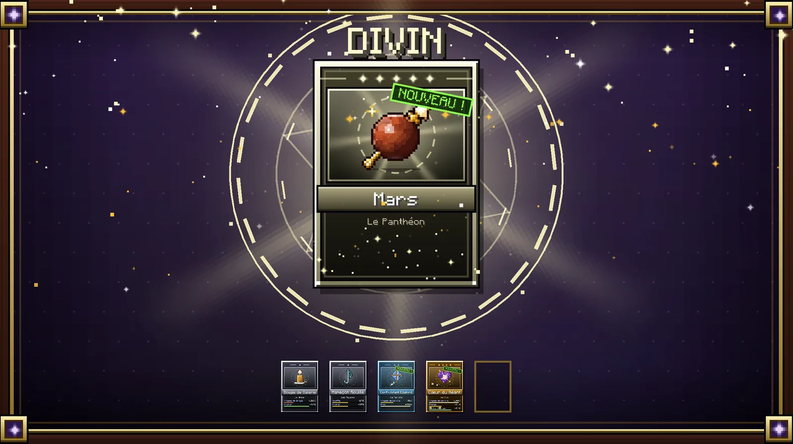
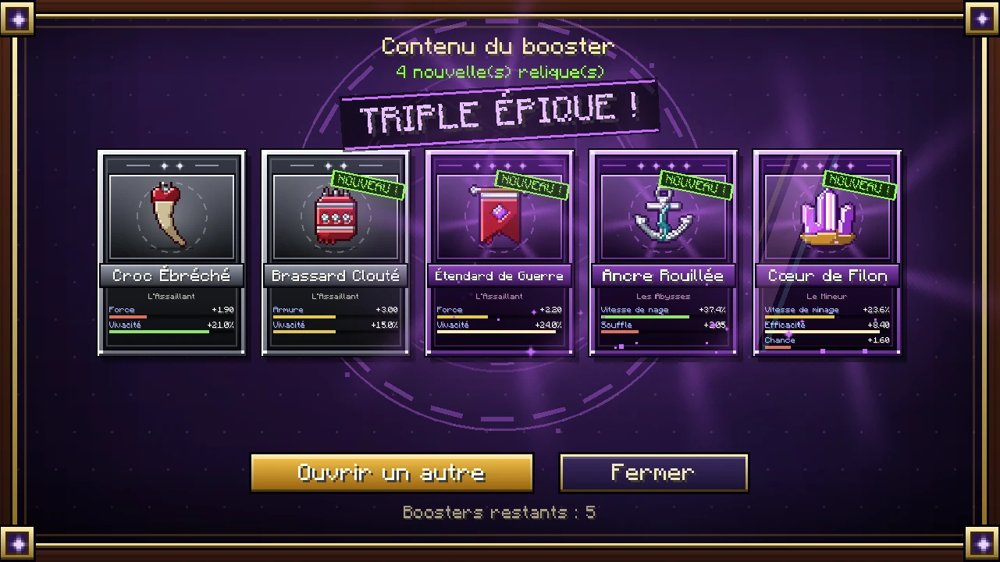

Gacha libre
Boosters
La route gratuite et non dirigée : aucun sceau, aucune pitié. Un booster ne s'ouvre plus à la main : on le pose sur une Table de Révélation, on le déchire, et ses 5 reliques en sortent déjà identifiées — 4 communes et 1 rare garantie. Chaque carte peut monter de rareté : une fois avec la chance du booster, puis encore, avec la même chance, jusqu'à épique — une commune peut donc finir épique, et plusieurs épiques peuvent sortir du même booster (0.33). À part de cette montée, chaque carte a 1 % de chances d'être une légendaire (relique de création comprise) et 0,1 % d'être un dieu, quel que soit le booster.









(agrandir l'image)

(agrandir l'image)Un booster ne se ramasse plus jamais dans un coffre ordinaire. Les coffres de village, de mine, de forteresse et de cité de l'End n'en contiennent plus : un pack vaut cinq reliques d'un coup, et le trouver dans un tonneau rendait l'invocation facultative. Il ne reste que trois sources, et les deux dernières sont dans l'Astrelume.
| Source | Ce qu'il faut faire | Combien |
|---|---|---|
| Boss | Tuer le Wither ou l'Ender Dragon | 1 garanti |
| Citadelle de Cendres | Fouiller ses cinq labyrinthes (1 chunk sur 600) | 2 à 3 |
| Tour de l'Enfer | Atteindre un palier (1 chunk sur 3000) | 1 tous les 10 étages |
La variante dépend de la source. À chaque cran, une carte du Booster Commun monte dans 10 % des cas, celle du Booster de Donjon dans 25 %, celle du Booster de Boss dans 40 %. La citadelle donne surtout du Donjon ; la tour s'améliore avec l'étage atteint, et passe au Boss dans le dernier tiers.
| Par carte | Commune | Rare | Épique | Légendaire | Dieu |
|---|---|---|---|---|---|
| Booster Commun | 71,2 % | 24,9 % | 2,8 % | 1 % | 0,1 % |
| Booster de Donjon | 59,3 % | 29,7 % | 9,9 % | 1 % | 0,1 % |
| Booster de Boss | 47,5 % | 30,9 % | 20,6 % | 1 % | 0,1 % |
Mesuré sur un million de boosters de chaque sorte. Sur les cinq cartes d'un booster : au moins une légendaire dans 4,9 % des cas, au moins un dieu dans 0,5 %.
Plusieurs épiques
| Par booster | Au moins une épique | Deux ou plus | Trois ou plus | Épiques en moyenne |
|---|---|---|---|---|
| Booster Commun | 13,4 % | 0,4 % | 0,01 % | 0,14 |
| Booster de Donjon | 41,7 % | 7,2 % | 0,6 % | 0,49 |
| Booster de Boss | 69,7 % | 27,0 % | 5,6 % | 1,03 |
Deux épiques ou plus dans le même booster, et le récapitulatif le fête : un tampon violet « DOUBLE ÉPIQUE ! » (triple, quadruple, quintuple…) s'abat au-dessus des cartes avec un éclat de lumière et une onde qui s'élargit. La légendaire et le dieu, eux, gardent leur chance fixe : 1 % et 0,1 % par carte, quel que soit le booster.


(agrandir l'image)